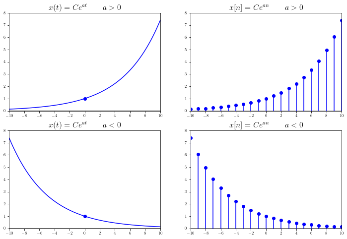
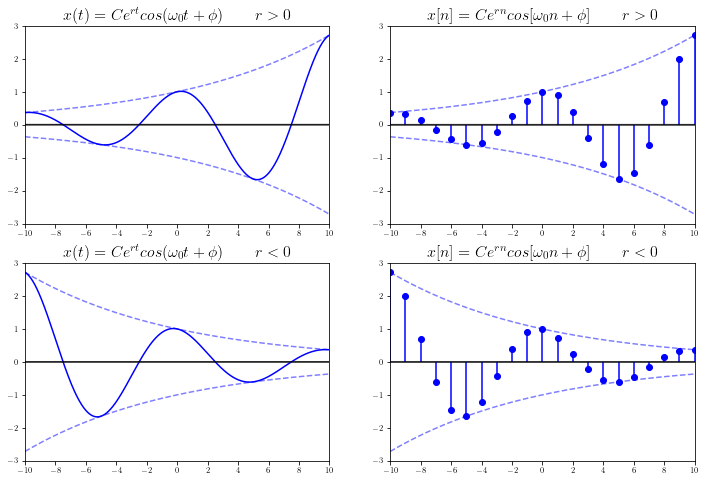
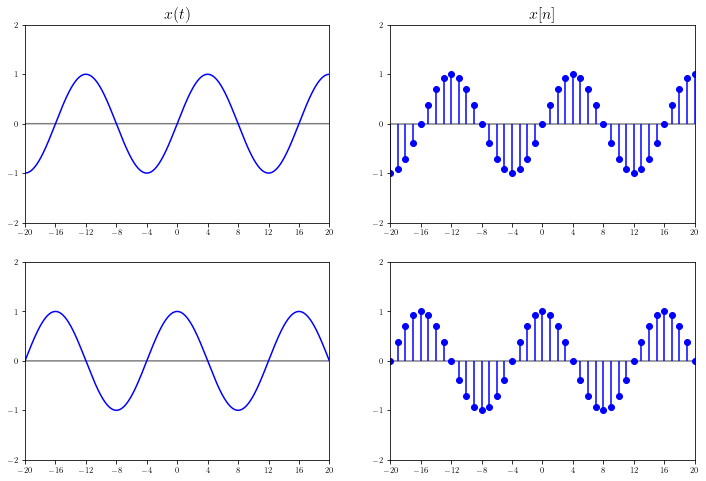
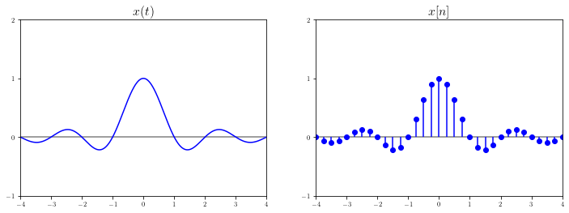

Signals and Systems
Contents
Signals and Systems#
Prerequisites#
# ! pip install -U sympy
# ! pip install -U numpy
# ! pip install -U matplotlib
# ! sudo apt install -y cm-super
# ! sudo apt install -y texlive texlive-latex-extra texlive-fonts-recommended dvipng
Simulation and Visualization in Python#
# HIDE/SHOW
import warnings
warnings.filterwarnings('ignore')
import sympy as sp
import numpy as np
from sympy.abc import t, x, y
from scipy import signal
import matplotlib.pyplot as plt
from matplotlib.ticker import MaxNLocator
plt.rcParams['text.usetex'] = True
%matplotlib inline
Utilizations#
# HIDE/SHOW
def mpl_axes_plot(axes, expr, xrange, **kwargs):
x, start, stop = xrange
func = sp.lambdify(x, expr)
x = np.linspace(start, stop, 10000)
y = func(x)
axes.tick_params(axis='x', labelsize=8)
axes.tick_params(axis='y', labelsize=8)
axes.xaxis.set_major_locator(MaxNLocator(integer=True))
axes.yaxis.set_major_locator(MaxNLocator(integer=True))
axes.grid(False)
axes.margins(0.02, 0.02)
axes.plot(x, np.zeros_like(x), color='k', alpha=0.5)
axes.plot(x, y, **kwargs)
return axes
def mpl_axes_stem(axes, expr, xrange, **kwargs):
x, start, stop, step = xrange
func = sp.lambdify(x, expr, ['numpy', 'sympy'])
x = np.arange(start, stop, step)
y = func(x)
axes.tick_params(axis='x', labelsize=8)
axes.tick_params(axis='y', labelsize=8)
axes.xaxis.set_major_locator(MaxNLocator(integer=True))
axes.yaxis.set_major_locator(MaxNLocator(integer=True))
axes.grid(False)
axes.margins(0.02, 0.02)
axes.plot(x, np.zeros_like(x), color='k', alpha=0.5)
return axes.stem(x, y, basefmt=" ", use_line_collection=True, **kwargs)
def mpl_axes_step(axes, expr, xrange, **kwargs):
x, start, stop, step = xrange
func = sp.lambdify(x, expr)
x = np.arange(start, stop, step)
y = func(x)
axes.tick_params(axis='x', labelsize=8)
axes.tick_params(axis='y', labelsize=8)
axes.xaxis.set_major_locator(MaxNLocator(integer=True))
axes.yaxis.set_major_locator(MaxNLocator(integer=True))
axes.grid(False)
axes.margins(0.02, 0.02)
axes.plot(x, np.zeros_like(x), color='k', alpha=0.5)
return axes.step(x, y, **kwargs)
What are Signals?#
Signals convey information.
Signals are represented as mathematical functions of one or more independent variables.
Signals are represented as mathematical functions of one dimensional variable in time.
Types of Signals#
Continuous-time (CT) signals
Discrete-time (DT) signals
Quantized signals
Digital signals?
# HIDE/SHOW
h = t*sp.sin(t/1.7)
fig, ax = plt.subplots(
2, 2,
figsize=(12, 8),
# tight_layout=True,
)
mpl_axes_plot(ax[0][0],
expr=h,
xrange=(t, -60, 60),
color='b')
ax[0][0].set_xlim(-1, 15, 1)
ax[0][0].set_ylim(-10, 15, 1)
ax[0][0].set_title(r'$x(t)$', fontsize=16)
mpl_axes_stem(ax[0][1],
expr=h,
xrange=(t, -60, 60, 1),
linefmt='b',
markerfmt='bo')
ax[0][1].set_xlim(-1, 15, 1)
ax[0][1].set_ylim(-10, 15, 1)
ax[0][1].set_title(r'$x[n]$', fontsize=16)
mpl_axes_step(ax[1][0],
expr=h,
xrange=(t, -60, 60, 1),
color='b',
)
ax[1][0].set_xlim(-1, 15, 1)
ax[1][0].set_ylim(-10, 15, 1)
# ax[1][0].set_title(r'$x[n]$', fontsize=16)
mpl_axes_stem(ax[1][1],
expr=h.xreplace({n : round(n, 1) for n in h.atoms(sp.Number)}),
xrange=(t, -60, 60, 1),
linefmt='b',
markerfmt='bo')
ax[1][1].set_xlim(-1, 15, 1)
ax[1][1].set_ylim(-10, 15, 1)
# ax[1][1].set_title(r'$x[n]$', fontsize=16)
plt.show()

Classes of Signals#
Even and Odd Signals#
# HIDE/SHOW
fig, ax = plt.subplots(
2, 2,
figsize=(12, 8),
# tight_layout=True,
)
f = sp.Piecewise(
(0, t<0),
(0.5, t==0),
(1, (t>0)&(t<=1)),
(2-t, (t>=1)&(t<=2)),
(0, t>=2)
)
h = f.subs(t, t/5)
mpl_axes_plot(ax[0][0], (h+h.subs(t, -t)), (t, -40, 40), color='b')
# mpl_axes_plot(ax[0][0], (h+h.subs(t, -t)), (t, -40, 40), color='r')
ax[0][0].set_xlim(-15, 15, 1)
ax[0][0].set_ylim(-1.2, 1.2, 1)
ax[0][0].set_title(r'$x(t)$', fontsize=16)
mpl_axes_stem(ax[0][1], (h+h.subs(t, -t)), (t, -40, 40, 1), linefmt='b', markerfmt='bo')
# mpl_axes_stem(ax[0][1], (h+h.subs(t, -t)), (t, -40, 40, 1), linefmt='r', markerfmt='ro')
ax[0][1].stem(0, 1, basefmt=" ", linefmt='b', markerfmt='bo')
ax[0][1].set_xlim(-15, 15, 1)
ax[0][1].set_ylim(-1.2, 1.2, 1)
ax[0][1].set_title(r'$x[n]$', fontsize=16)
mpl_axes_plot(ax[1][0], (h-h.subs(t, -t)), (t, -40, 40), color='b')
# mpl_axes_plot(ax[1][0], (h-h.subs(t, -t)), (t, -40, 40), color='r')
ax[1][0].set_xlim(-15, 15, 1)
ax[1][0].set_ylim(-1.2, 1.2, 1)
# ax[1][0].set_title(r'$x(t)$', fontsize=16)
mpl_axes_stem(ax[1][1], (h-h.subs(t, -t)), (t, -40, 40, 1), linefmt='b', markerfmt='bo')
# mpl_axes_stem(ax[1][1], (h-h.subs(t, -t)), (t, -40, 40, 1), linefmt='r', markerfmt='ro')
ax[1][1].scatter(0, 0, color='b')
ax[1][1].set_xlim(-15, 15, 1)
ax[1][1].set_ylim(-1.2, 1.2, 1)
# ax[1][1].set_title(r'$x[n]$', fontsize=16)
plt.show()

Real-valued Exponential Signals#
# HIDE/SHOW
fig, ax = plt.subplots(
2, 2,
figsize=(12, 8),
# tight_layout=True,
)
mpl_axes_plot(ax[0][0], sp.exp((t)/5), (t, -40, 40), color='b')
ax[0][0].scatter(0, 1, color='b')
ax[0][0].set_xlim(-10, 10, 1)
ax[0][0].set_ylim(0, 8, 1)
ax[0][0].set_title(r'$x(t) = Ce^{at} \qquad a>0$', fontsize=16)
mpl_axes_stem(ax[0][1], sp.exp((t)/5), (t, -40, 40, 1), linefmt='b', markerfmt='bo')
ax[0][1].set_xlim(-10, 10, 1)
ax[0][1].set_ylim(0, 8, 1)
ax[0][1].set_title(r'$x[n] = Ce^{an} \qquad a>0$', fontsize=16)
mpl_axes_plot(ax[1][0], sp.exp((-t)/5), (t, -40, 40), color='b')
ax[1][0].scatter(0, 1, color='b')
ax[1][0].set_xlim(-10, 10, 1)
ax[1][0].set_ylim(0, 8, 1)
ax[1][0].set_title(r'$x(t) = Ce^{at} \qquad a<0$', fontsize=16)
mpl_axes_stem(ax[1][1], sp.exp((-t)/5), (t, -40, 40, 1), linefmt='b', markerfmt='bo')
ax[1][1].set_xlim(-10, 10, 1)
ax[1][1].set_ylim(0, 8, 1)
ax[1][1].set_title(r'$x[n] = Ce^{an} \qquad a<0$', fontsize=16)
plt.show()

Complex Exponential Signals#
# HIDE/SHOW
fig, ax = plt.subplots(
2, 2,
figsize=(12, 8),
# tight_layout=True,
)
mpl_axes_plot(ax[0][0], sp.exp((t)/10)*sp.cos(2*np.pi*t/10), (t, -40, 40), color='b')
mpl_axes_plot(ax[0][0], sp.exp((t)/10), (t, -40, 40), color='b', alpha=0.5, linestyle='--')
mpl_axes_plot(ax[0][0], -sp.exp((t)/10), (t, -40, 40), color='b', alpha=0.5, linestyle='--')
ax[0][0].set_xlim(-10, 10, 1)
ax[0][0].set_ylim(-3, 3, 1)
ax[0][0].set_title(r'$x(t) = Ce^{rt}cos(\omega_0t+\phi) \qquad r>0$', fontsize=16)
mpl_axes_stem(ax[0][1], sp.exp((t)/10)*sp.cos(2*np.pi*t/10), (t, -40, 40, 1), linefmt='b', markerfmt='bo')
mpl_axes_plot(ax[0][1], sp.exp((t)/10), (t, -40, 40), color='b', alpha=0.5, linestyle='--')
mpl_axes_plot(ax[0][1], -sp.exp((t)/10), (t, -40, 40), color='b', alpha=0.5, linestyle='--')
ax[0][1].set_xlim(-10, 10, 1)
ax[0][1].set_ylim(-3, 3, 1)
ax[0][1].set_title(r'$x[n] = Ce^{rn}cos[\omega_0n+\phi] \qquad r>0$', fontsize=16)
mpl_axes_plot(ax[1][0], sp.exp((-t)/10)*sp.cos(2*np.pi*t/10), (t, -40, 40), color='b')
mpl_axes_plot(ax[1][0], sp.exp((-t)/10), (t, -40, 40), color='b', alpha=0.5, linestyle='--')
mpl_axes_plot(ax[1][0], -sp.exp((-t)/10), (t, -40, 40), color='b', alpha=0.5, linestyle='--')
ax[1][0].set_xlim(-10, 10, 1)
ax[1][0].set_ylim(-3, 3, 1)
ax[1][0].set_title(r'$x(t) = Ce^{rt}cos(\omega_0t+\phi) \qquad r<0$', fontsize=16)
mpl_axes_stem(ax[1][1], sp.exp((-t)/10)*sp.cos(2*np.pi*t/10), (t, -40, 40, 1), linefmt='b', markerfmt='bo')
mpl_axes_plot(ax[1][1], sp.exp((-t)/10), (t, -40, 40), color='b', alpha=0.5, linestyle='--')
mpl_axes_plot(ax[1][1], -sp.exp((-t)/10), (t, -40, 40), color='b', alpha=0.5, linestyle='--')
ax[1][1].set_xlim(-10, 10, 1)
ax[1][1].set_ylim(-3, 3, 1)
ax[1][1].set_title(r'$x[n] = Ce^{rn}cos[\omega_0n+\phi] \qquad r<0$', fontsize=16)
plt.show()

Sinusoidal Signals#
# HIDE/SHOW
fig, ax = plt.subplots(
1, 2,
figsize=(12, 4),
# tight_layout=True,
)
mpl_axes_plot(ax[0], sp.sin((t*sp.pi)/sp.pi/5), (t, -40, 40), color='b')
mpl_axes_plot(ax[0], sp.cos((t*sp.pi)/sp.pi/5), (t, -40, 40), color='r')
ax[0].set_xlim(-16, 16, 1)
# ax[0].set_ylim(-10, 10, 1)
ax[0].set_title(r'$x(t)$', fontsize=16)
mpl_axes_stem(ax[1], sp.sin((t*sp.pi)/sp.pi/5), (t, -40, 40, 1), linefmt='b', markerfmt='bo')
mpl_axes_stem(ax[1], sp.cos((t*sp.pi)/sp.pi/5), (t, -40, 40, 1), linefmt='r', markerfmt='ro')
ax[1].set_xlim(-16, 16, 1)
# ax[1].set_ylim(-10, 10, 1)
ax[1].set_title(r'$x[n]$', fontsize=16)
plt.show()

Elementary Signals#
Ramp Functions#
# HIDE/SHOW
fig, ax = plt.subplots(
1, 2,
figsize=(12, 4),
# tight_layout=True,
)
mpl_axes_plot(ax[0], t*sp.Heaviside(t), (t, -40, 40), color='b')
ax[0].set_xlim(-4, 4, 1)
ax[0].set_ylim(-1, 4, 1)
ax[0].set_title(r'$x(t)$', fontsize=16)
mpl_axes_stem(ax[1], t*sp.Heaviside(t), (t, -40, 40, 0.25), linefmt='b', markerfmt='bo')
ax[1].set_xlim(-4, 4, 1)
ax[1].set_ylim(-1, 4, 1)
ax[1].set_title(r'$x[n]$', fontsize=16)
plt.show()

Unit Step (Heaviside) Functions#
# HIDE/SHOW
fig, ax = plt.subplots(
1, 2,
figsize=(12, 4),
# tight_layout=True,
)
mpl_axes_plot(ax[0], sp.Heaviside(t), (t, -40, 40), color='b')
ax[0].set_xlim(-4, 4, 1)
ax[0].set_ylim(-1, 2, 1)
ax[0].set_title(r'$x(t)$', fontsize=16)
mpl_axes_stem(ax[1], sp.GreaterThan(t, 0), (t, -40, 40, 0.25), linefmt='b', markerfmt='bo')
ax[1].set_xlim(-4, 4, 1)
ax[1].set_ylim(-1, 2, 1)
ax[1].set_title(r'$x[n]$', fontsize=16)
plt.show()

Rectangle Functions#
# HIDE/SHOW
fig, ax = plt.subplots(
1, 2,
figsize=(12, 4),
# tight_layout=True,
)
rect = sp.Piecewise(
(0, sp.Or(sp.StrictLessThan(t, -1/2), sp.StrictGreaterThan(t, 1/2))),
(1, sp.And(sp.LessThan(t, 1/2), sp.GreaterThan(t, -1/2))),
)
mpl_axes_plot(ax[0], rect, (t, -40, 40), color='b')
ax[0].set_xlim(-4, 4, 1)
ax[0].set_ylim(-1, 2, 1)
ax[0].set_title(r'$x(t)$', fontsize=16)
mpl_axes_stem(ax[1], rect, (t, -40, 40, 0.25), linefmt='b', markerfmt='bo')
ax[1].set_xlim(-4, 4, 1)
ax[1].set_ylim(-1, 2, 1)
ax[1].set_title(r'$x[n]$', fontsize=16)
plt.show()

Triangle Functions#
# HIDE/SHOW
fig, ax = plt.subplots(
1, 2,
figsize=(12, 4),
# tight_layout=True,
)
tri = sp.Piecewise(
(0, sp.Or(sp.StrictLessThan(t, -1), sp.StrictGreaterThan(t, 1))),
(1+t, sp.And(sp.LessThan(t, 0), sp.GreaterThan(t, -1))),
(1-t, sp.And(sp.LessThan(t, 1), sp.GreaterThan(t, 0))),
)
mpl_axes_plot(ax[0], tri, (t, -40, 40), color='b')
ax[0].set_xlim(-4, 4, 1)
ax[0].set_ylim(-1, 2, 1)
ax[0].set_title(r'$x(t)$', fontsize=16)
mpl_axes_stem(ax[1], tri, (t, -40, 40, 0.25), linefmt='b', markerfmt='bo')
ax[1].set_xlim(-4, 4, 1)
ax[1].set_ylim(-1, 2, 1)
ax[1].set_title(r'$x[n]$', fontsize=16)
plt.show()

Unit Impulse (Delta) Functions#
# HIDE/SHOW
fig, ax = plt.subplots(
1, 2,
figsize=(12, 4),
# tight_layout=True,
)
delta = sp.Piecewise(
(1, sp.Equality(t, 0)),
(0, sp.Or(sp.StrictLessThan(t, 0), sp.StrictGreaterThan(t, 0))),
)
# mpl_axes_stem(ax[0], sp.Equality(t, 0), (t, 0, 1, 1), linefmt='b', markerfmt='b^')
# mpl_axes_plot(ax[0], sp.Equality(t, 0), (t, -40, 40), color='k', alpha=0.5)
mpl_axes_stem(ax[0], delta, (t, -40, 40, 0.25), linefmt='b', markerfmt=' ')
ax[0].scatter(0, 1, color='b', marker='^', s=100)
ax[0].set_xlim(-4, 4, 1)
ax[0].set_ylim(-1, 2, 1)
ax[0].set_title(r'$x(t)$', fontsize=16)
mpl_axes_stem(ax[1], delta, (t, -40, 40, 0.25), linefmt='b', markerfmt='bo')
ax[1].set_xlim(-4, 4, 1)
ax[1].set_ylim(-1, 2, 1)
ax[1].set_title(r'$x[n]$', fontsize=16)
plt.show()

Sinc Functions#
# HIDE/SHOW
fig, ax = plt.subplots(
1, 2,
figsize=(12, 4),
# tight_layout=True,
)
sp.SingularityFunction(t, 0, 1)
mpl_axes_plot(ax[0], sp.sin(sp.pi*t)/(sp.pi*t+1e-6), (t, -40, 40), color='b')
ax[0].set_xlim(-4, 4, 1)
ax[0].set_ylim(-1, 2, 1)
ax[0].set_title(r'$x(t)$', fontsize=16)
mpl_axes_stem(ax[1], sp.sin(sp.pi*t)/(sp.pi*t), (t, -40, 40, 0.25), linefmt='b', markerfmt='bo')
mpl_axes_stem(ax[1], 1, (t, 0, 1, 1), linefmt='b', markerfmt='bo')
ax[1].set_xlim(-4, 4, 1)
ax[1].set_ylim(-1, 2, 1)
ax[1].set_title(r'$x[n]$', fontsize=16)
plt.show()
